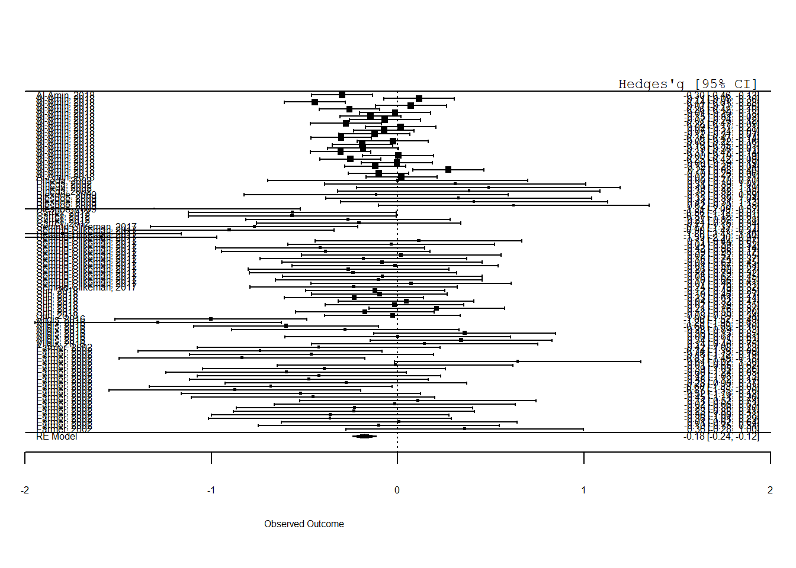

Chapter 3 Scoring a publication on reproducibility
Often times the used R code for rendering and inspecting data is not visualized in a publication. In this file the article “Meta-Analysis: MRI Volumetric Data of Children with ADHD Subtypes” is tested and scored on reproducibility. The article can be found under the following link:
https://osf.io/d97pw/
3.1 Information about the study
The aim of this study was to examine how the ADHD subtypes differentiate based on brain structure volume size. Attention-deficit hyperactivity disorder (ADHD) is a common neurodevelopmental disorder consisting of inattentive and/or hyperactive behaviors that is typically prevalent in childhood. There are three recognized subtypes of this disorder—hyperactive, inattentive, and combined.
For this study a meta-analysis was done using 8 studies that included volumetric data of ADHD subtypes (inattentive and combined) in children that was acquired through magnetic resonance imaging (MRI) techniques. Analyses were done looking at combined and inattentive type in comparison to controls and between the two groups. Further subgroup analyses were done on gender and brain regions in the two subtypes. Results show that there is a significant brain volume reduction in combined type in comparison to controls and inattentive type. There is also a significant volume reduction observed in males. The other analyses done yielded insignificant findings, although the volume reduction in inattentive type was only slightly above the cutoff of alpha (0.05). These findings help in better understanding the relations between brain volume and ADHD subtypes, but further research is still needed in this area.
3.2 Reproducibility scoring
The article is going to be scored on the basis of ‘Repita’ criteria. The criterea will be scored on a scale from 1 (very hard) to 5 (very easy). More information about these criteria can be found under the following link:
https://www.researchgate.net/publication/340244621_Reproducibility_and_reporting_practices_in_COVID-19_preprint_manuscripts
| Transparency Criteria | Score on a 1-5 scale |
|---|---|
| Study Purpose | 4 |
| Data Availability Statement | 4 |
| Data Location | 5 |
| Study Location | 3 |
| Author Review | 4 |
| Ethics Statement | 3 |
| Funding Statement | 1 |
| Code Availability | 5 |
## Running the open source code
The file “HYSELL_Meta_Studies.xlsx” was downloaded of the site to run the code and see if it is reproducible. In terms of the readability of the code i would grade the code a score of 4 out of 5.
When running the script i have not encountered major difficulties with visualizing a figure. The only thing i had to change from the original script is the function “plyr::revalue”. Rstudio did not reconize this function. With this in mind i have changed this piece of the code to “dplyr::recode”.
Taken together on a scale from 1 (very hard) to 5 (very easy) it took much effort to reproduce the visualization of the data. With this in mind i would score the article a 4 out of 5.
library(dplyr)
library(metafor)
library(tidyverse)
library(robumeta)
library(readxl)
HYSELL_Meta_Studies <- read_excel("./Data_raw/HYSELL_Meta_Studies.xlsx")
# Convert ABB column to factor
HYSELL_Meta_Studies$stype <- as.factor(HYSELL_Meta_Studies$ABB)
# Mutate stype column using dplyr::recode
HYSELL_Meta_Studies <- HYSELL_Meta_Studies %>%
mutate(stype = dplyr::recode(ABB,
"C" = "0",
"IA" = "1"))
## tn: Treatment Group Sample size
## cn: control Group Sample size
## tmean: Treatment Group Mean
## cmean: Control Group Mean
## tsd: Treatment Group Standard Deviation
## csd: Control Group Standard Deviation
##Effect Size Calculation
#Cohen's d
#Common Components
HYSELL_Meta_Studies$IG_totaln <- with(HYSELL_Meta_Studies, tn+cn)
HYSELL_Meta_Studies$IG_multin <- with(HYSELL_Meta_Studies, tn*cn)
#Step 1. Pooled Standard Deviation
HYSELL_Meta_Studies$s_pool <- with(HYSELL_Meta_Studies, sqrt(((tn-1)*(tsd^2)+(cn-1)*(csd^2))/(IG_totaln-2)))
#Step 2. Effect Size
HYSELL_Meta_Studies$IG_d <- with(HYSELL_Meta_Studies, (tmean-cmean)/s_pool)
#Step 3. Sampling Variance
HYSELL_Meta_Studies$IG_se <- with(HYSELL_Meta_Studies, (IG_totaln/IG_multin)+(IG_d^2/(2*IG_totaln)))
## MERGE Cohen's d Effect Size into one column
HYSELL_Meta_Studies$Cohen_es <-rowSums(select(HYSELL_Meta_Studies, ends_with("_d")), na.rm=T)
HYSELL_Meta_Studies$Cohen_v <-rowSums(select(HYSELL_Meta_Studies, ends_with("_se")), na.rm=T)
#column for effect size and sampling variance
#Based on Cohen's d,
HYSELL_Meta_Studies$Cohen_es <- as.numeric(HYSELL_Meta_Studies$Cohen_es, na.rm=TRUE)
HYSELL_Meta_Studies$Cohen_v <- as.numeric(HYSELL_Meta_Studies$Cohen_v, na.rm=TRUE)
##Bias-Corrected Standardized Mean Difference (Hedges' g) from Cohen's d
#Correction Factor (J)
#Reclassified effect size IG ( =1)
HYSELL_Meta_Studies$df <- HYSELL_Meta_Studies$IG_totaln-2
HYSELL_Meta_Studies$g_j <- 1-(3/((4*HYSELL_Meta_Studies$df)-1))
HYSELL_Meta_Studies$g_es_all <- with(HYSELL_Meta_Studies, Cohen_es*g_j)
HYSELL_Meta_Studies$g_v_all <- with(HYSELL_Meta_Studies, Cohen_v*g_j^2)
## Random Effect
thesis_ran_model <- rma(g_es_all, g_v_all, data = HYSELL_Meta_Studies)
thesis_ran_model##
## Random-Effects Model (k = 95; tau^2 estimator: REML)
##
## tau^2 (estimated amount of total heterogeneity): 0.0492 (SE = 0.0133)
## tau (square root of estimated tau^2 value): 0.2218
## I^2 (total heterogeneity / total variability): 66.31%
## H^2 (total variability / sampling variability): 2.97
##
## Test for Heterogeneity:
## Q(df = 94) = 239.2705, p-val < .0001
##
## Model Results:
##
## estimate se zval pval ci.lb ci.ub
## -0.1799 0.0325 -5.5306 <.0001 -0.2437 -0.1162 ***
##
## ---
## Signif. codes: 0 '***' 0.001 '**' 0.01 '*' 0.05 '.' 0.1 ' ' 1#Number of effect sizes: 95
#Pooled Effect size: -0.1799
#Standard error of pooled effect size: 0.0325
#95% Confidence interval: [-0.2437, -0.1162]
#p-value: <.0001
# Q-statistic = 239.2705
# df = 94
# p-val = < 0.0001
#Interpretation:
# Moderator Analysis: Comparing inattentive with combined: a Q-test based on analysis of variance
moder1_t <- rma(g_es_all, g_v_all, data=HYSELL_Meta_Studies, subset=stype== 0) # For combined group (=0)
moder2_t <- rma(g_es_all, g_v_all, data=HYSELL_Meta_Studies, subset=stype== 1) # For inattentive group (=1)
moder1_t ##
## Random-Effects Model (k = 52; tau^2 estimator: REML)
##
## tau^2 (estimated amount of total heterogeneity): 0.0965 (SE = 0.0296)
## tau (square root of estimated tau^2 value): 0.3106
## I^2 (total heterogeneity / total variability): 79.80%
## H^2 (total variability / sampling variability): 4.95
##
## Test for Heterogeneity:
## Q(df = 51) = 143.6559, p-val < .0001
##
## Model Results:
##
## estimate se zval pval ci.lb ci.ub
## -0.2564 0.0547 -4.6830 <.0001 -0.3637 -0.1491 ***
##
## ---
## Signif. codes: 0 '***' 0.001 '**' 0.01 '*' 0.05 '.' 0.1 ' ' 1moder2_t ##
## Random-Effects Model (k = 43; tau^2 estimator: REML)
##
## tau^2 (estimated amount of total heterogeneity): 0.0078 (SE = 0.0069)
## tau (square root of estimated tau^2 value): 0.0881
## I^2 (total heterogeneity / total variability): 22.52%
## H^2 (total variability / sampling variability): 1.29
##
## Test for Heterogeneity:
## Q(df = 42) = 60.5712, p-val = 0.0316
##
## Model Results:
##
## estimate se zval pval ci.lb ci.ub
## -0.0579 0.0309 -1.8701 0.0615 -0.1185 0.0028 .
##
## ---
## Signif. codes: 0 '***' 0.001 '**' 0.01 '*' 0.05 '.' 0.1 ' ' 1# Pooled Effect size combined type: -0.2564 (SE = 0.0547, p <.0001)
# Within-variance, Q(df = 51) = 143.6559, p-val <.0001
# Pooled Effect size for inattentive type: -0.0579 (SE = 0.0309, p= 0.0615)
# Within-variance, Q(df = 42) = 60.5712, p-val = 0.0316
# Overall pooled Effect size: -0.1799 (SE = 0.0325, p <.0001)
# Total Variance Q(df = 94) = 239.2705,, p-val < .0001
143.6559 + 60.5712## [1] 204.2271# Qwithin = 204.2271
239.2705 - (143.6559 + 60.5712)## [1] 35.0434# Qbetween = 35.0434
# Test under chi-square distribution (Q-statistic follows chi-square dsictribution.)
pchisq(35.0434, df=1, lower.tail=FALSE)## [1] 3.22438e-09# p-value for the Qbetween is 3.22438e-09 (less than alpha-level, 0.05).
# We found that the Q-between (35.0434) is significant (p < 0.05) indicating
# two groups have statistically different pooled effect sizes.
## Meta-regression without and with "% of male" moderator
# Centering the moderator
mean(HYSELL_Meta_Studies$m2f)## [1] 0.7951579HYSELL_Meta_Studies$m2f_c <- HYSELL_Meta_Studies$m2f - 0.795
## RVE (Considering dependency among multiple effect sizes within a study)
RVE_thesis <- robu(formula = g_es_all ~ 1, data=HYSELL_Meta_Studies, studynum=studyid, var.eff.size=g_v_all,
modelweights = "CORR", small = TRUE)
RVE_thesis## RVE: Correlated Effects Model with Small-Sample Corrections
##
## Model: g_es_all ~ 1
##
## Number of studies = 8
## Number of outcomes = 95 (min = 4 , mean = 11.9 , median = 8 , max = 24 )
## Rho = 0.8
## I.sq = 64.62675
## Tau.sq = 0.09790346
##
## Estimate StdErr t-value dfs P(|t|>) 95% CI.L 95% CI.U Sig
## 1 X.Intercept. -0.163 0.0701 -2.33 6.45 0.0556 -0.332 0.00523 *
## ---
## Signif. codes: < .01 *** < .05 ** < .10 *
## ---
## Note: If df < 4, do not trust the results#Number of effect sizes: 95
#Number of studies: 8
#Pooled Effect size: -0.163
#Standard error of pooled effect size: 0.0701
#95% Confidence interval: [-0.332, 0.00523]
#p-value: 0.0556
# Tau-square: 0.09790346
#RVE with moderator
RVE_thesis1 <- robu(formula = g_es_all ~ m2f_c, data=HYSELL_Meta_Studies, studynum=studyid, var.eff.size=g_v_all,
modelweights = "CORR", small = TRUE)
RVE_thesis1## RVE: Correlated Effects Model with Small-Sample Corrections
##
## Model: g_es_all ~ m2f_c
##
## Number of studies = 8
## Number of outcomes = 95 (min = 4 , mean = 11.9 , median = 8 , max = 24 )
## Rho = 0.8
## I.sq = 62.06272
## Tau.sq = 0.08758224
##
## Estimate StdErr t-value dfs P(|t|>) 95% CI.L 95% CI.U Sig
## 1 X.Intercept. -0.148 0.0468 -3.16 5.53 0.0219 -0.264 -0.0308 **
## 2 m2f_c -1.105 0.2403 -4.60 2.74 0.0235 -1.913 -0.2971 **
## ---
## Signif. codes: < .01 *** < .05 ** < .10 *
## ---
## Note: If df < 4, do not trust the results#Number of effect sizes: 95
#Number of studies: 8
#Pooled Effect size: -0.148
#Standard error of pooled effect size: 0.0468
#95% Confidence interval: [-0.264, -0.0308]
#p-value: 0.0219
# Tau-square: 0.08758224
#Pooled Effect size for gender: -1.105
#Standard error of pooled effect size for gender: 0.2403
#95% Confidence interval for gender: [-1.913, -0.2971]
#p-value gender: 0.0235
## Make Forest plot
forest(thesis_ran_model, slab = paste(HYSELL_Meta_Studies$Authors),
xlim = c(-2,2), cex = 0.5)
op <- par(cex = 0.75, font = 10)
text(-3, 98, "Author and Year", pos = 4)
text(2, 98, "Hedges'g [95% CI]", pos = 2)
par(op)